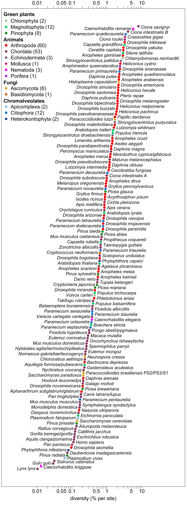
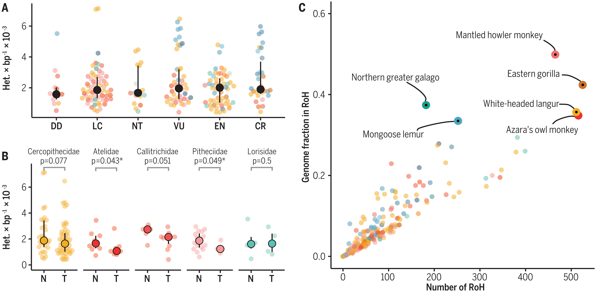
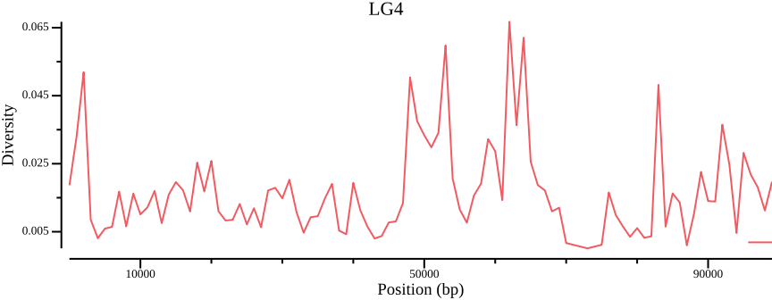
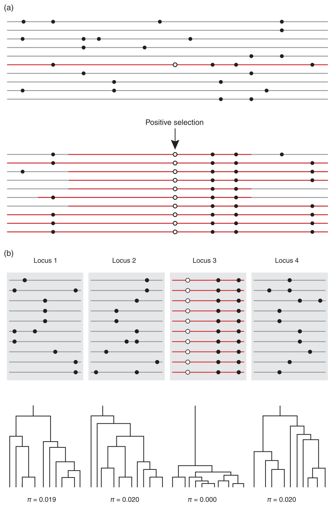
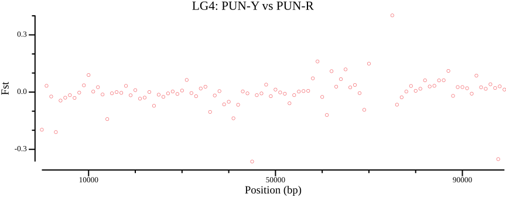
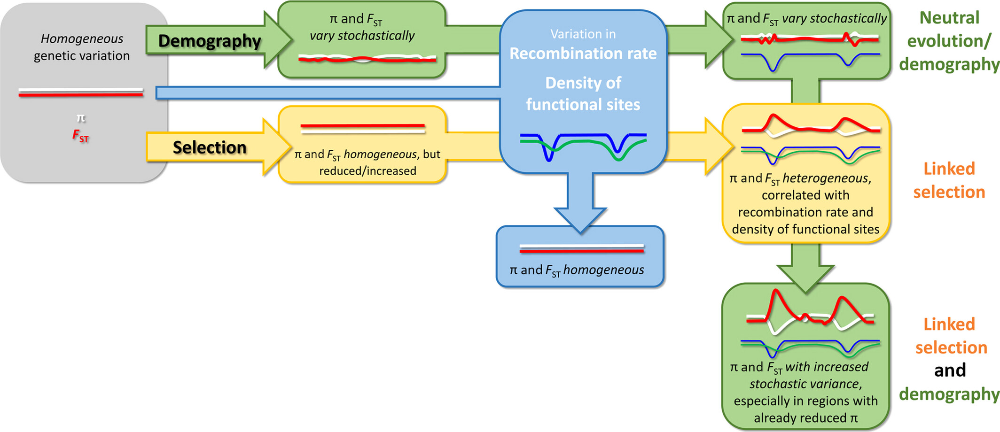
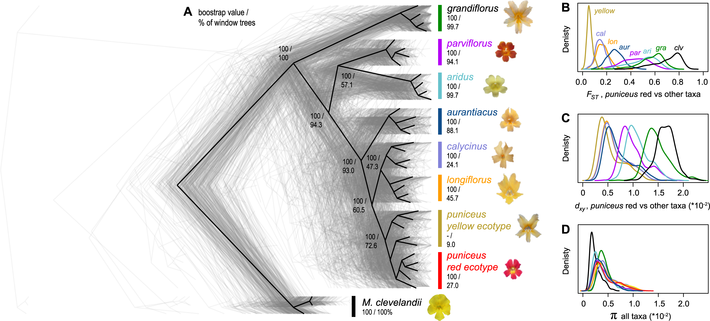

Genetic diversity
Theory and practice
Per Unneberg
NBIS
05-Nov-2023
Genetic diversity
What determines diversity levels?

The usual questions:
What evolutionary forces maintain genetic diversity in natural populations? How do diversity levels relate to census population sizes…? Do low levels of diversity limit adaptation to selective pressures?
Leffler et al. (2012)
After allozyme era, the study of genetic diversity was largely neglected due to lack of genome-wide data, but with advent of population genomics becoming a hot topic again.
Ellegren & Galtier (2016)
Lewontin’s paradox: genetic diversity range smaller than variation among species in population size
Factors that influence genetic diversity
Genetic drift
Reduces diversity at loss \(\propto \frac{1}{N}\)
Selection
Adaptive selection decreases variation, more so if acting on new mutations compared to standing variation.
Balancing selection may increase variation.
Recombination
Low recombination rates lead to less “reshuffling” of variation and hence lower diversity.
Why we measure patterns of genetic variation
Genetic variation patterns are informative of evolutionary and demographic processes. We often use summary statistics to describe the patterns, and to estimate parameters such as effective population size and mutation rate from genetic variation data (\(\theta = 4N_e\mu\))
Often critical first step of analysis, such as
- exploratory study
- test of an evolutionary hypothesis
- training of machine-learning models
Genetic diversity in conservation biology

…no global relationship between numerically coded IUCN extinction risk categories and estimated heterozygosity…
Low genetic diversity symptom of past genetic drift inbreeding (higher levels of homozygosity), caused by low \(N_e\)
García-Dorado & Caballero (2021)
However: if population decline is rapid, may be too little time for inbreeding to occur \(\Rightarrow\) genetic diversity within species not necessarily aligned to extinction risk
Lewis (2023)
Measuring genetic diversity
Nucleotide diversity
sample 0: 00100
sample 1: 00001
sample 2: 01010
sample 3: 10010Diversity: for each site, count and sum differences between all (unique) pairs of samples, and divide by unique pairs. For \(n\) samples, there are \(n \choose 2\) such pairs.
Example: for site 0, start comparing samples 0-1 (0 diffs), samples 0-2 (0), samples 0-3 (1), samples 1-2 (0) and so on. Call these differences \(k_{ij}\). Then
\[ \pi = \frac{\sum_{i<j}k_{ij}}{n \choose 2} \]
Watterson’s \(\theta_W\)
sample 0: 00100
sample 1: 00001
sample 2: 01010
sample 3: 10010Alternative measure of diversity: simply count the number of segregating sites (\(S\)). However, must correct for the number of samples \(n\) as we expect that more samples \(\Rightarrow\) more sites
\[ \theta_W = \frac{S}{a} = \frac{S}{\sum_{i=1}^{n-1}\frac{1}{i}} \]
Important: under neutrality, \(\theta = E(\pi) = E(\theta_W)\). Difference between two the basis for Tajima’s D that is a test for selection
Calculating diversity measures - \(\pi\) and \(\theta_W\)
sample 0: 00100
sample 1: 00001
sample 2: 01010
sample 3: 10010from trees import ts_small_mut as ts
# Calculate correction factor a for Watterson's
# theta: the larger the sample size, the more
# segregating sites we expect to see
a = sum([1/i for i in range(1, ts.num_samples)])
pi = ts.diversity()
thetaW = ts.num_sites / a / ts.sequence_length
print(f"Diversity: {pi:.6f}",
f"Watterson's theta: {thetaW:.6f}",
f"Sequence length: {ts.sequence_length:.0f}",
sep="\n")Diversity: 0.000267
Watterson's theta: 0.000273
Sequence length: 10000Divergence - dXY
sample 0: 00100
sample 1: 00001
sample 2: 01010
sample 3: 10010Divergence: for each site, count and sum differences between all pairs of samples between two populations
Example: for site 0, compare samples 0-2 (0 diffs), samples 0-3 (1 diff), samples 1-2 (0 diffs), samples 1-3 (1 diff), and so on. Call differences \(k_ij\), let \(n_X\), \(n_Y\) be sample size in populations \(X\), \(Y\). Then
\[ d_{XY} = \frac{1}{n_Xn_Y}\sum_{i=1}^{n_X}\sum_{i=1}^{n_Y}k_{ij} \]
Divergence - dXY
Differentiation - AFD (allele frequency difference)
sample 0: 00100
sample 1: 00001
sample 2: 01010
sample 3: 10010Allele Frequency Difference (AFD) proposed as intuitive alternative to \(F_{\mathrm{ST}}\). For each site, count the difference in allele frequency between two populations.
Example: site 0, frequency in blue is 0, in black 1/2, so difference=1/2, site 1, frequency in blue 0, in black 1/2, and so on
\[ AFD = \frac{1}{2}\sum_{i=1}^n| (f_{i1} - f_{i2})| \]
where \(n\) is the number of different alleles (\(n=2\) for biallelic SNPs), \(f_{ij}\) is the frequency of allele \(i\) in population \(j\)
Berner (2019)
Differentiation - \(F_{\mathrm{ST}}\)
sample 0: 00100
sample 1: 00001
sample 2: 01010
sample 3: 10010\(F_{\mathrm{ST}}\) is another measure of differention among subpopulations (Wright, 1931). It ranges between 0 and 1 and has the interpretation 0: no differentiation, 1: complete fixation of alternate alleles in subpopulations
Example: site 3 has \(F_{\mathrm{ST}}\)=1 as it is fixed in black, not present in blue
There are many ways to express and calculate \(F_{\mathrm{ST}}\). Example:
\[ F_{\mathrm{ST}} = \frac{h_{\mathrm{T}} - h_{\mathrm{S}}}{h_{\mathrm{T}}} \]
where \(h_{\mathrm{T}}\) is the expected heterozygosity in the total population, \(h_{\mathrm{S}}\) the average of expected heterozygosities across subpopulations. For site 3, \(h_{\mathrm{S}}=0\), \(h_{\mathrm{T}}=2/3\).
Caveats: strongly influenced by within subpopulation levels of variation. Therefore considered relative measure (cf \(d_{\mathrm{XY}}\), which is an absolute measure).
Differentiation - \(F_{\mathrm{ST}}\)
sample 0: 00100
sample 1: 00001
sample 2: 01010
sample 3: 10010from trees import ts_small_mut as ts
sample_sets = [[0, 1], [2, 3]]
win = [0] + [int(x.position)+1 for x in ts.sites()]
_ = win.pop()
win = win + [ts.sequence_length]
fst = ts.Fst(sample_sets=sample_sets)
fst_sites = ts.Fst(sample_sets=sample_sets,
windows=win)
print(f"Site id: {list(range(5))}",
f"Fst per site: {fst_sites}",
f"Overall Fst: {fst:.6f}",
sep="\n")Site id: [0, 1, 2, 3, 4]
Fst per site: [0. 0. 0. 1. 0.]
Overall Fst: 0.200000Many programs treat missing data as invariant

Diversity:
\[ \pi = \frac{\sum_{i<j}k_{ij}}{n \choose 2} \]
Divergence:
\[ d_{XY} = \frac{1}{n_Xn_Y}\sum_{i=1}^{n_X}\sum_{j=1}^{n_Y}k_{ij} \]
Here, \(n\) is the number of samples, \(k_{ij}\) tally of allelic differences between two haplotypes within (\(\pi\)) a population or between (\(d_{XY}\)) populations
Missing data may bias diversity measures downwards

Nucleotide diversity landscapes

On genome scans
Genetic basis of adaptation and genome scans

Fundamental questions:
- How many genes are involved in the evolution of adaptive traits?
- What is the distribution of phenotypic effects among successive allelic substitutions?
- Is adaptation typically based on standing variation or new mutations?
- What is the relative importance of additive vs. nonadditive effects on adaptive trait variation?
- And what is the relative importance of structural vs. regulatory changes in phenotypic evolution?
Storz (2005), Fig 1
Example
vcftools --gzvcf allsites.vcf.gz --weir-fst-pop PUN-Y.txt \
--weir-fst-pop PUN-R.txt \
--fst-window-size 1000
csvtk plot line --tabs out.windowed.weir.fst \
-x BIN_START -y MEAN_FST \
--point-size 2 --xlab "Position (bp)" \
--ylab "Fst" --title "LG4: PUN-Y vs PUN-R" \
--width 9.0 --height 3.5 --scatter \
> out.windowed.weir.fst.mean.png
Z-scores can help identifying outliers

Raw data can be converted to Z-scores to highlight outliers. A Z-score is a measure of how far a data point is from the mean in terms of the number of standard deviations:
\[ Z = \frac{X - \mu}{\sigma} \]
Threshold of a couple of standard deviations common.
LD decay and choice of window size

Properties of genetic variation and inferred demographic history in sampled A. millepora. Fuller et al. (2020), Figure 2. Upper left plot illustrates LD as a function of physical distance. Here, choosing a window size 20-30kb would ensure that most windows are independent.
Annotations
csvtk filter2 --tabs annotation.gff --filter ' $3 == "CDS" ' |\
csvtk mutate2 --tabs -H -e '$4 - 12000000' -w 0 |\
csvtk mutate2 --tabs -H -e '$5 - 12000000' -w 0 |\
csvtk cut --tabs --fields 1,10,11 | bedtools sort | bedtools merge \
> CDS.bed 2>/dev/null
head -n 3 CDS.bedLG4 12032 12121
LG4 12214 12658
LG4 12774 12830Genome diversity and differentiation landscapes
Dissecting differentiation landscapes

Monkeyflower genomic landscape

Exercise
Bibliography
Berner, D. (2019). Allele Frequency Difference AFD to FST for Quantifying Genetic Population Differentiation. Genes, 10(4), 308. https://doi.org/10.3390/genes10040308
Burri, R. (2017). Dissecting differentiation landscapes: A linked selection’s perspective. Journal of Evolutionary Biology, 30(8), 1501–1505. https://doi.org/10.1111/jeb.13108
Charlesworth, B., & Jensen, J. D. (2022). How Can We Resolve Lewontin’s Paradox? Genome Biology and Evolution, 14(7), evac096. https://doi.org/10.1093/gbe/evac096
Corbett-Detig, R. B., Hartl, D. L., & Sackton, T. B. (2015). Natural Selection Constrains Neutral Diversity across A Wide Range of Species. PLOS Biology, 13(4), e1002112. https://doi.org/10.1371/journal.pbio.1002112
Ellegren, H., & Galtier, N. (2016). Determinants of genetic diversity. Nature Reviews Genetics, 17(7), 422–433. https://doi.org/10.1038/nrg.2016.58
Fuller, Z. L., Mocellin, V. J. L., Morris, L. A., Cantin, N., Shepherd, J., Sarre, L., Peng, J., Liao, Y., Pickrell, J., Andolfatto, P., Matz, M., Bay, L. K., & Przeworski, M. (2020). Population genetics of the coral Acropora millepora: Toward genomic prediction of bleaching. Science, 369(6501), eaba4674. https://doi.org/10.1126/science.aba4674
García-Dorado, A., & Caballero, A. (2021). Neutral genetic diversity as a useful tool for conservation biology. Conservation Genetics, 22(4), 541–545. https://doi.org/10.1007/s10592-021-01384-9
Korunes, K. L., & Samuk, K. (2021). Pixy: Unbiased estimation of nucleotide diversity and divergence in the presence of missing data. Molecular Ecology Resources, 21(4), 1359–1368. https://doi.org/10.1111/1755-0998.13326
Kuderna, L. F. K., Gao, H., Janiak, M. C., Kuhlwilm, M., Orkin, J. D., Bataillon, T., Manu, S., Valenzuela, A., Bergman, J., Rousselle, M., Silva, F. E., Agueda, L., Blanc, J., Gut, M., de Vries, D., Goodhead, I., Harris, R. A., Raveendran, M., Jensen, A., … Marques Bonet, T. (2023). A global catalog of whole-genome diversity from 233 primate species. Science, 380(6648), 906–913. https://doi.org/10.1126/science.abn7829
Leffler, E. M., Bullaughey, K., Matute, D. R., Meyer, W. K., Ségurel, L., Venkat, A., Andolfatto, P., & Przeworski, M. (2012). Revisiting an Old Riddle: What Determines Genetic Diversity Levels within Species? PLOS Biology, 10(9), e1001388. https://doi.org/10.1371/journal.pbio.1001388
Lewis, D. (2023). Biggest ever study of primate genomes has surprises for humanity. Nature. https://doi.org/10.1038/d41586-023-01776-6
Nei, M. (1973). Analysis of Gene Diversity in Subdivided Populations. Proceedings of the National Academy of Sciences, 70(12), 3321–3323. https://doi.org/10.1073/pnas.70.12.3321
Stankowski, S., Chase, M. A., Fuiten, A. M., Rodrigues, M. F., Ralph, P. L., & Streisfeld, M. A. (2019). Widespread selection and gene flow shape the genomic landscape during a radiation of monkeyflowers. PLOS Biology, 17(7), e3000391. https://doi.org/10.1371/journal.pbio.3000391
Storz, J. F. (2005). INVITED REVIEW: Using genome scans of DNA polymorphism to infer adaptive population divergence. Molecular Ecology, 14(3), 671–688. https://doi.org/10.1111/j.1365-294X.2005.02437.x
Wright, S. (1931). Evolution in Mendelian Populations. Genetics, 16(2), 97–159. https://www.ncbi.nlm.nih.gov/pmc/articles/PMC1201091/
Genetic diversity